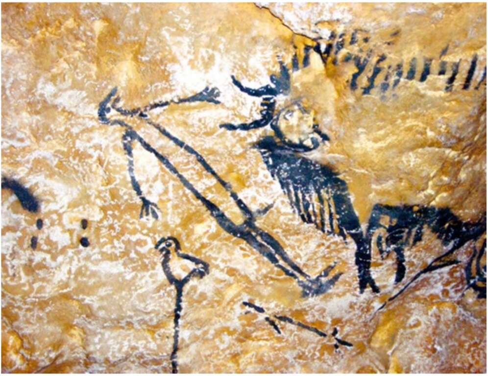

8. A painting from Lascaux Cave, c.15,000-20,000 years ago. What exactly do we see, and what is the painting’s meaning? Some argue that we see a man with the head of a bird and an erect penis, being killed by a bison. Beneath the man is another bird which might symbolise the soul, released from the body at the moment of death. If so, the picture depicts not a prosaic hunting accident, but rather the passage from this world to the next. But we have no way of knowing whether any of these speculations are true. It’s a Rorschach test that reveals much about the preconceptions of modern scholars, and little about the beliefs of ancient foragers. In Sungir, Russia, archaeologists discovered in 1955 a 30,000-year-old burial site belonging to a mammoth-hunting culture. In one grave they found the skeleton of a fifty-year-old man, covered with strings of mammoth ivory beads, containing about 3,000 beads in total. On the dead man’s head was a hat decorated with fox teeth, and on his wrists twenty-five ivory bracelets. Other graves from the same site contained far fewer goods. Scholars deduced that the Sungir mammoth-hunters lived in a hierarchical society, and that the dead man was perhaps the leader of a band or of an entire tribe comprising several bands. It is
